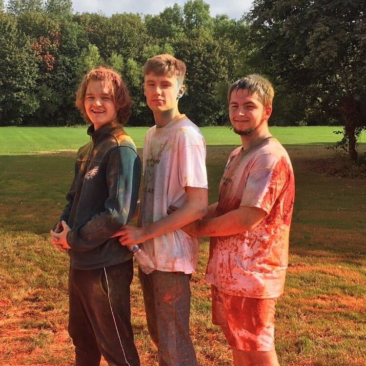

A student looking for an opportunity to start a part time job as I have just started college. I’d like to get the experience of working early so I can adapt to it in the future. This could also be an opportunity to start learning my future as well by knowing how money works and how to save and what not. I think my main focus for this journey is to find a job where I use my hands. The reason being is because I know it's hard work and I’m not the type of person to go for everything that's easy.
•I believe I am a very hard working person who won’t give up doing something until it is done.
• When it comes to working with others I try to be as helpful and supportive as possible.
•I am very organised. I like things to be clean, done properly and well managed.
•I am fluent in reading and writing in Russian.
• Finally I think I am a great problem solver and have some knowledge in computer problem solving.
• 2016-2020 Moyle Park College, Clondalkin Co. Dublin Leaving cert
•2020-2024 Currently attending the National College of Ireland BSHC in Computing
•Current Modules: Discrete Mathematics, Web Design and development, Computational Thinking, The Computing Industry and Problem Solving and Programming concepts.
I've had a month's experience working as a cleaner for Moyle Park College where I've done jobs such as painting, clearing out classrooms, removing graffiti, cleaning bathrooms and much more.